Kibana Guide: Console
|
This content was generated with the assistance of AI and should be verified against the official documentation before being relied on in production. |
Checked on 2026-11-11 against Kibana 9.5.x.
What you build
You use Dev Tools → Console as a scratchpad for the HTTP APIs of the stack. You count the Bookshelf log records, search them with a request body that Console indents for you, put the index name in a variable, find an earlier request in the history, copy a request as a cURL command, and call the Kibana API with the prefix kbn:. The last request returns the version of Kibana.
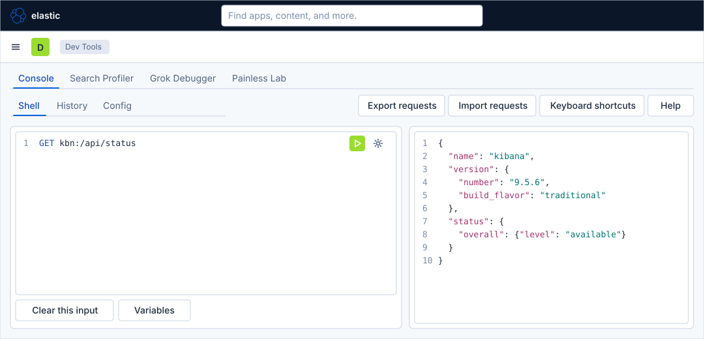
Before you start
-
Start the Kibana profile of the hands-on lab and wait about a minute:
cd lab docker compose --profile kibana up -d -
Open http://localhost:5601 and sign in as
elasticwith the passwordlab-elastic-password. When Kibana opens its full-screen welcome page, click Explore on my own. -
Do the previous guide, Spaces, roles and users. Sign in as
elastic: the user of that guide has no access to Dev Tools. -
Wait about two minutes after the start, with the load generator in its default mode, so that the log data stream
logs-generic.otel-defaultholds records. -
Console needs no licence beyond the basic one; the lab runs a trial licence anyway. A request runs with the privileges of the signed-in user.
-
The guide was checked on Elasticsearch and Kibana 9.5.6. The figures are drawings of the Kibana 9.5 user interface, not screenshots, so small details can differ from your screen. The menu of Request options, the Variables editor and the History list are drawn generically, and the responses in the figures are samples; look for a control by its name when it is not where a figure shows it. A highlighted box with a number marks the control of the step with the same number.
Steps
Everything happens in Dev Tools. The page has the tabs Console, Search Profiler, Grok Debugger and Painless Lab; this guide uses Console, which has the sub-tabs Shell, History and Config. The editor is at the left and the response at the right. As you type, Console may suggest methods, index names and fields; accept a suggestion with Enter or Tab, or ignore it and keep typing.
Open Console
-
Click the menu button (Toggle primary navigation) at the left of the second bar.
-
Under Management, click Dev Tools.
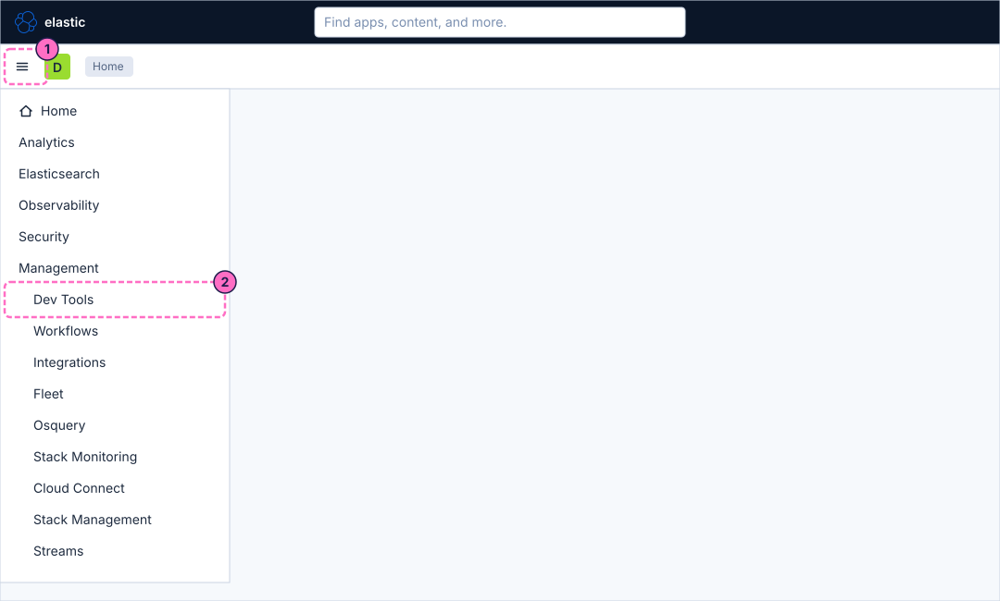
-
On the tab Console and the sub-tab Shell, click line 1 of the editor. The output pane says "Enter a new request" until you send one.
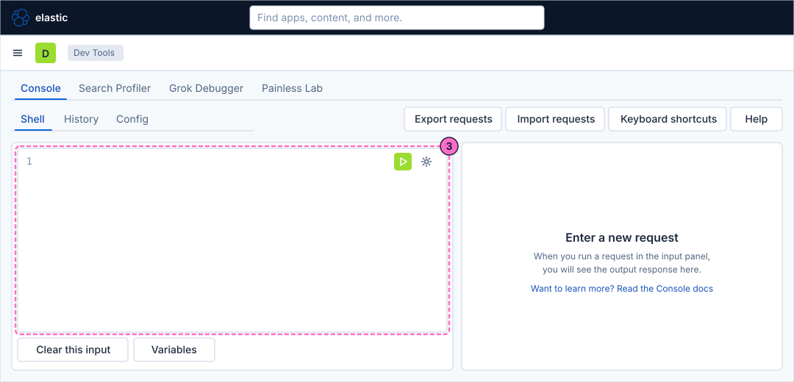
Send a request
-
Type the request line, which counts the records of the Bookshelf log data stream:
GET logs-generic.otel-default/_count -
Click the green button Click to send request at the right of the line, or press Ctrl-Enter (Cmd-Enter on macOS) with the cursor on the request.
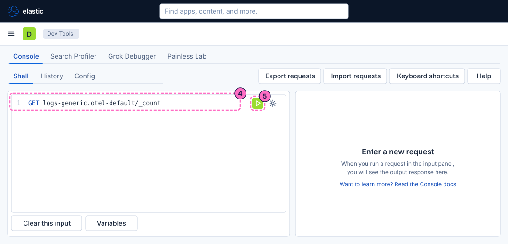
-
Read the output pane: the field
countis the number of log records, and_shardssays that the one shard answered. The number grows while the load generator runs.
Search with a request body and auto-indent
-
Select the text of the editor (Ctrl-A or Cmd-A) and type the first line of a search request:
GET logs-generic.otel-default/_search -
Press Enter and type the body of the request on a single line. It returns two records whose
attributes.statusis200:{"size":2,"query":{"match":{"attributes.status":200}}}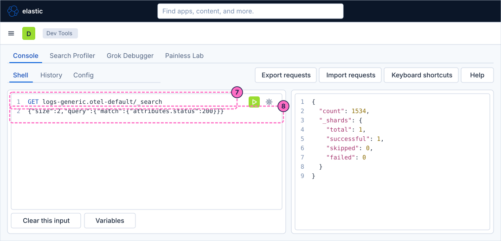
-
Click Request options (the wrench at the right of the first line) and choose the entry that indents the request, named Auto indent in the figure. The entry names can differ a little between releases.
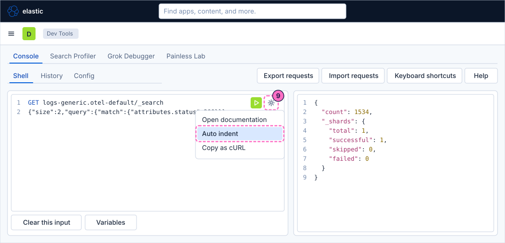
-
The body now spreads over several lines with one key per line. Click the green button to send the request.
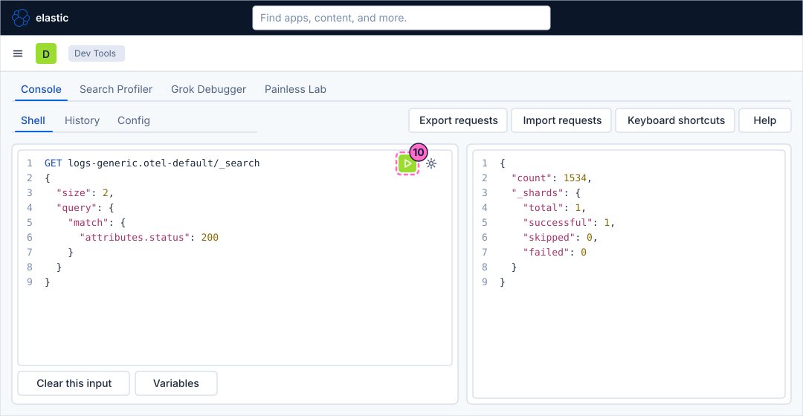
-
Read the output pane.
hits.total.valueis the number of records with the status200, andhits.hitsholds the two documents asked for, each with its_source, includingbody.textsuch asServed /api/search.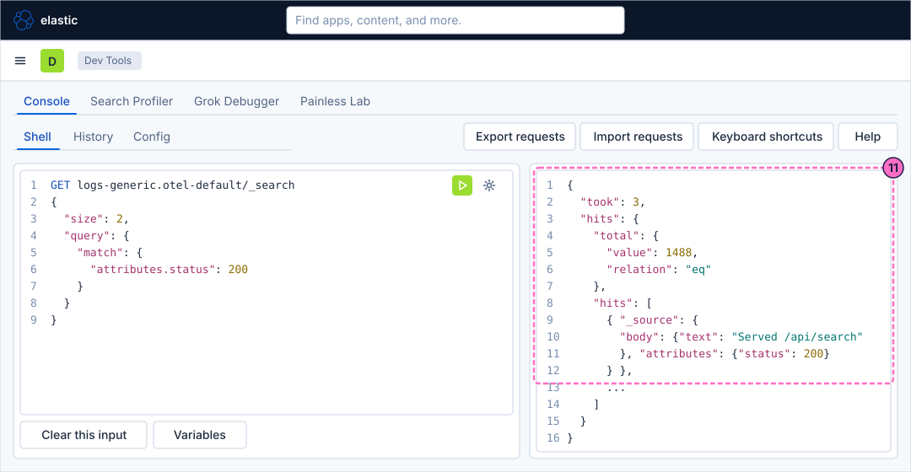
Use a variable
-
Click Variables at the bottom of the editor.
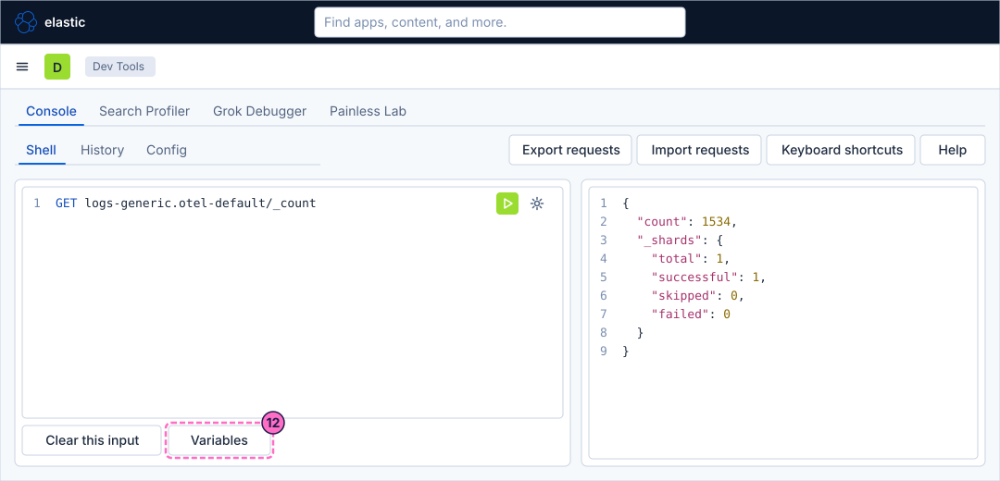
-
Add a variable with the name
indexand the valuelogs-generic.otel-default. -
Save the variables and close the editor.
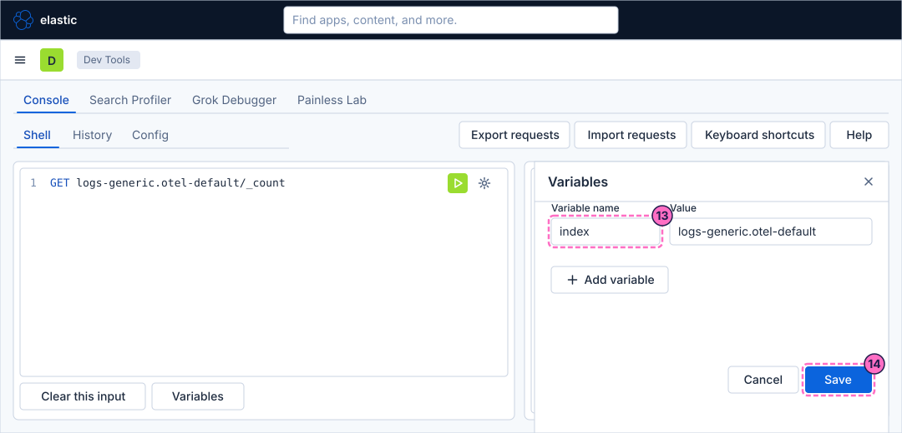
-
Replace the text of the editor by a request that names the variable in the path:
GET ${index}/_count -
Click the green button. Console replaces
${index}by the value before it sends the request, and the response is the same count as in step 6.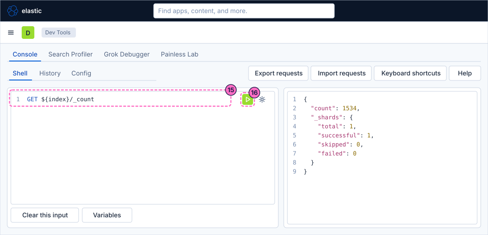
Find an earlier request and copy it as cURL
-
Click the sub-tab History.
-
In the list, click the entry of an earlier request, for example the
_searchrequest of step 7, to look at it and use it again.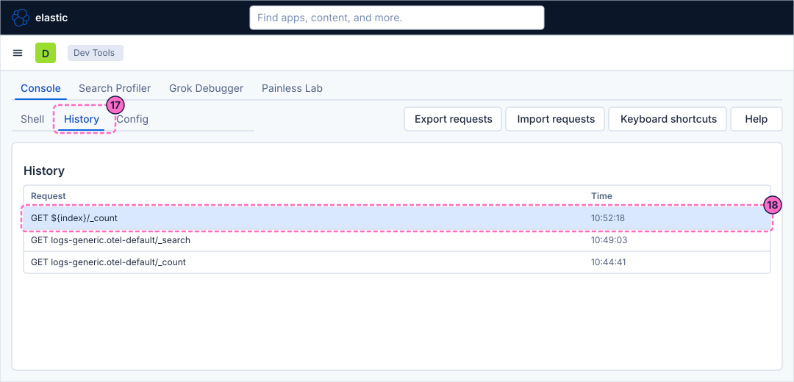
-
Go back to the sub-tab Shell, type
GET logs-generic.otel-default/_countagain, and leave the cursor on that line. -
Open Request options and choose the entry that copies the request as a cURL command (Copy as cURL in the figure).
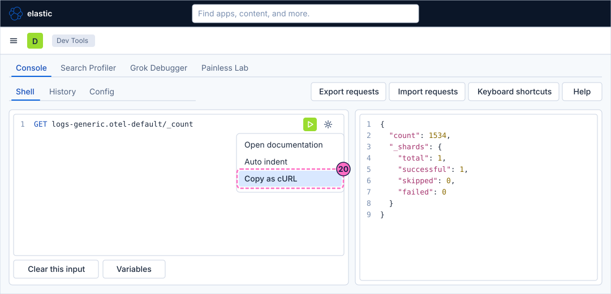
-
Paste the command into a terminal. It targets the address of Elasticsearch that Kibana is configured with, which inside the lab network is
http://elasticsearch:9200; replace it withhttp://localhost:9200and add the credentials of the lab:curl -X GET "http://localhost:9200/logs-generic.otel-default/_count" -u elastic:lab-elastic-password
Call a Kibana API
-
In the sub-tab Shell, replace the text of the editor by a request to the Kibana API. The prefix
kbn:sends the request to Kibana instead of Elasticsearch:GET kbn:/api/status -
Click the green button.
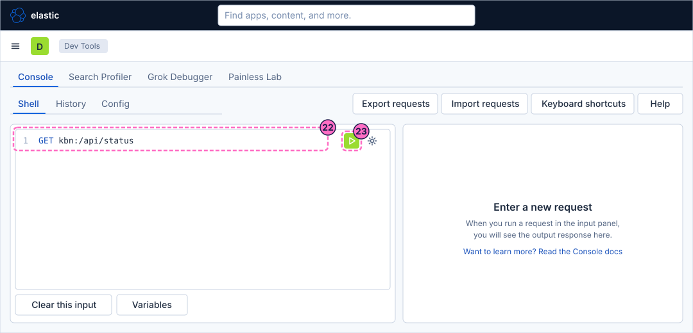
-
Read the output pane:
version.numberis9.5.6in the lab, the same value ascurl -s -u elastic:lab-elastic-password http://localhost:5601/api/statusreturns in a terminal.
Check the result
The output pane of step 24 shows the status of Kibana with its version, so Console reached both services: Elasticsearch for the requests of steps 4 to 16, and Kibana for the request with kbn:. To see the counts react to the load, send step 6 twice with the load generator in the mode log-errors and compare the result:
curl -X POST localhost:8090/mode/log-errorsRestore normal traffic afterwards:
curl -X POST localhost:8090/mode/normalVariations
-
Replace the match in the body by
{"match":{"severity_text":"ERROR"}}to list the error records, which exist while the load generator is in the modefailingorlog-errors. -
Send
GET kbn:/api/data_viewsto list the data views of the default space; the answer includes Bookshelf logs (guides). -
Use Export requests to save the editor as a file, and Import requests to load it again.
What can go wrong
| Symptom | Cause | Fix |
|---|---|---|
The output pane still says "Enter a new request" |
The request was not sent: the cursor was not on a request line, or the green button was not clicked. |
Click inside the request and click the green button. |
The response is |
The index name has a typo, or the data stream does not exist yet. |
Type |
The response is a parse error |
The JSON body has a missing quote, comma or brace. |
Use the auto-indent entry of Request options: it fails on the same mistake, which shows where it is. |
The response is a 404 for the path |
The variable was not saved, or its name differs from the one in the request. |
Open Variables and check the name |
A |
The path is not a Kibana API path. |
Start the path with |
Clean up
The guide creates nothing in Elasticsearch or Kibana. The variable and the history stay in the browser; remove the variable from Variables if you do not need it, and restore the load generator with curl -X POST localhost:8090/mode/normal if you changed it.
Where to go next
-
Previous guide: Spaces, roles and users.
-
This is the last guide of the Kibana series. Continue with the reference pages: Querying with KQL, ES|QL and PromQL covers the query languages that Console, Discover and Lens use, and the Kibana cheat sheet summarises the whole section on one page.